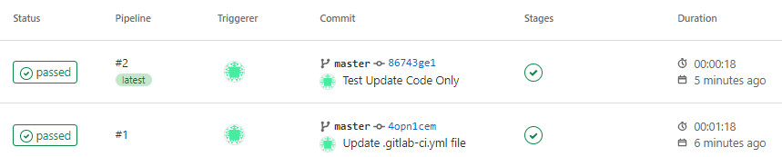
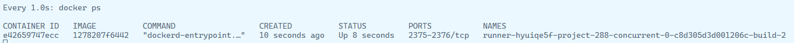

setup gitlab runner with cacheable docker executor
When using gitlab ci, it always take a long time to build docker image because cache is not used.
Here is how to setup executer using local cache to speedup build time.
When do you need this?¶
If you have a standalone server that only used for gitlab runner, Shell Executor orUse Docker socket binding should be enough for you. You can skip this article.
If you can bear few minutes build time, just use kaniko or Use Docker-in-Docker.
Keep watching if you don't want to use socket binding or shell executor and want to reduce docker build time from few minutes to few seconds.
Setup GitLag Runner¶
-
get registation token from gitlab admin panel,
/admin/runners -
set var
GITLAB_HOST=192.168.0.11
GITLAB_PORT=443
GITLAB_URL="https://${GITLAB_HOST}:${GITLAB_PORT}/"
REGISTRATION_TOKEN="xxxxxxxxxxxxx"
HARBOR_HOST=192.168.0.12
HARBOR_PORT=443
DEPLOY_FOLDER=/srv/gitlab-runner
- perpare file ane folder
mkdir -p ${DEPLOY_FOLDER}
mkdir -p ${DEPLOY_FOLDER}/config
mkdir -p ${DEPLOY_FOLDER}/config/certs
cd ${DEPLOY_FOLDER}
# download gitlab server certificate
openssl s_client -showcerts -connect ${GITLAB_HOST}:${GITLAB_PORT} < /dev/null 2>/dev/null | sudo openssl x509 -outform PEM > ${DEPLOY_FOLDER}/config/certs/${GITLAB_HOST}.crt
# download harbor server certificate
openssl s_client -showcerts -connect ${HARBOR_HOST}:${HARBOR_PORT} < /dev/null 2>/dev/null | sudo openssl x509 -outform PEM > ${DEPLOY_FOLDER}/${HARBOR_HOST}.crt
- register gitlab runner and generate config file
sudo docker run --rm -v ${DEPLOY_FOLDER}/config:/etc/gitlab-runner/ docker.io/gitlab/gitlab-runner:v15.8.2 register \
--non-interactive \
--tag-list="dind-runner" \
--name="dind-runner" \
--executor "docker" \
--docker-image "docker:23" \
--docker-tlsverify="false" \
--run-untagged="true" \
--custom_build_dir-enabled \
--builds-dir="/builds" \
--docker-volumes="/builds:/builds" \
--env='GIT_CLONE_PATH=$CI_BUILDS_DIR/$CI_CONCURRENT_ID/$CI_PROJECT_NAME' \
--cache-dir="/cache" \
--docker-volumes="/cache:/cache" \
--docker-volumes="/var/run/docker.sock:/var/run/docker.sock" \
--docker-volumes="/etc/docker/certs.d:/etc/docker/certs.d" \
--url="${GITLAB_URL}" \
--registration-token="${REGISTRATION_TOKEN}"
- update concurrent to 10
- create docker-compose file
echo "
services:
dind:
container_name: dind
image: docker:23-dind
restart: always
privileged: true
environment:
# force docker deamon to disable TLS
DOCKER_TLS_CERTDIR: ''
command:
- --storage-driver=overlay2
networks:
- gitlab-runner
volumes:
- ${DEPLOY_FOLDER}/${HARBOR_HOST}.crt:/etc/docker/certs.d/${HARBOR_HOST}/ca.crt
runner:
container_name: runner
restart: always
image: docker.io/gitlab/gitlab-runner:v15.8.2
depends_on:
- dind
environment:
- DOCKER_HOST=tcp://dind:2375
volumes:
- ${DEPLOY_FOLDER}/config:/etc/gitlab-runner
networks:
- gitlab-runner
networks:
gitlab-runner: {}
" > ${DEPLOY_FOLDER}/docker-compose.yml
- start container
cd ${DEPLOY_FOLDER} && docker compose up -d --wait - view logs
docker compose logs -n 100 -f
you can download single script file here
create gitlab-ci file¶
create .gitlab-ci.yml file in your git project and commit, it will trigger pipline
build-docker-image:
stage: deploy
tags:
- docker-dind-runner
variables:
CI_REGISTRY: 192.168.0.12:443
CI_REGISTRY_USER: admin
CI_REGISTRY_PASSWORD: xxxxxxxx
script:
- docker login -u "$CI_REGISTRY_USER" -p "$CI_REGISTRY_PASSWORD" $CI_REGISTRY
- docker build . -t "${CI_REGISTRY}/apps/${CI_PROJECT_PATH_SLUG}:latest" --build-arg BUILDKIT_INLINE_CACHE=1
- docker push "${CI_REGISTRY}/apps/${CI_PROJECT_PATH_SLUG}:latest"

I am using a new dotnet webapi as demo, the first build takes 01:18 but second build only take 18s with code update. As long as you don't update .csproj file, you can use docker build layer local cache.
you can watch job container created inside dind container when trigger job

also setup crontab to clearup every month prevent disk full